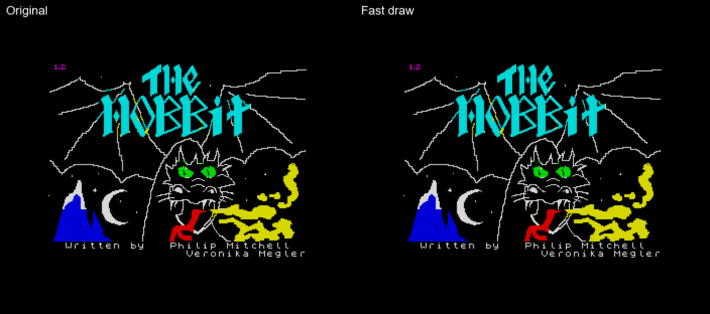
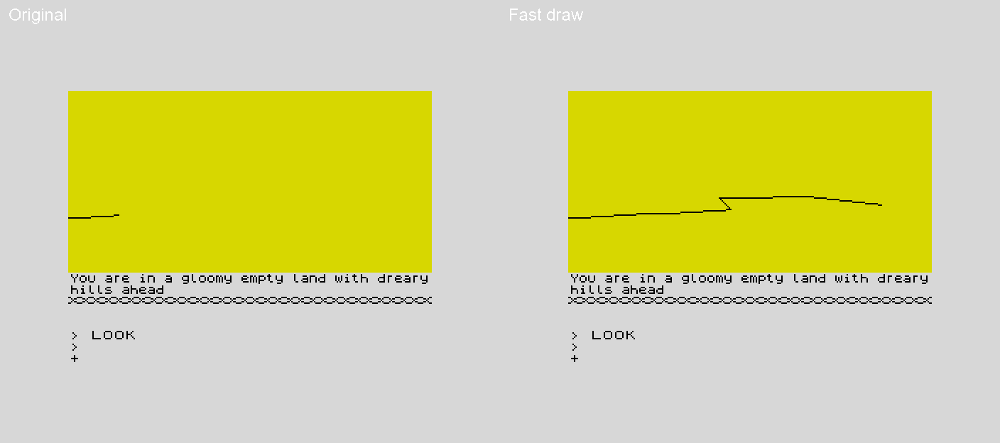
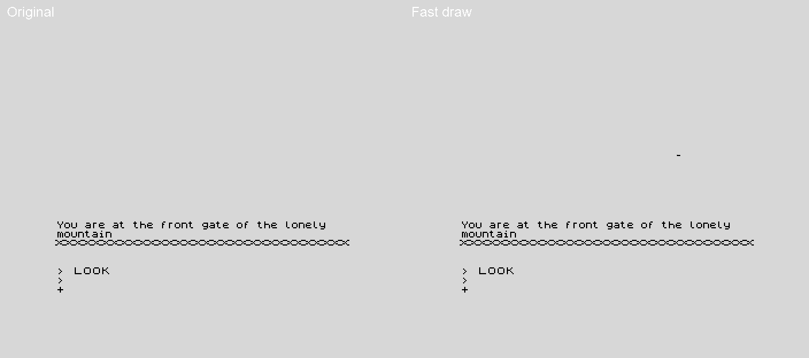

Pictures four times faster
Entering a new place stops the game for as long as its picture takes to draw -- nearly seven seconds for Bag End, the first thing a game shows, and almost twelve for the slowest.
patches/hobbit_fast_draw.s draws every picture about four times faster, and draws each one exactly as the original does.

Bag End, from the title screen: 6.7 s, and 1.7 s patched.
Location 6, the hidden path with trolls' footprints, the slowest picture in the game: 11.7 s, and 2.9 s patched.

Location 4, the lonelands, the second slowest: 11.5 s, and 2.8 s patched.

Location 39, the front gate, the third slowest: 10.4 s, and 2.6 s patched.
Recorded on the emulator at real speed, the original on the left and the patched game on the right; each loops once its picture is done.
Why it was slow. Both drawing routines,
DRAW_LINE and
FLOOD_FILL, step a point one pixel at a time, so they always know where the next pixel is -- and then work its screen address out again from the coordinates, through
PIXEL_ADDRESS, which rotates a bit into place one position at a time. The fill does that four times for every pixel it fills: the pixel above, the pixel below, the pixel itself and the next one along. Measured in the simulator, PIXEL_ADDRESS is 52% of all the time spent drawing.
What the patch does. The same algorithms, in the same order, pushing the same fill seeds onto the stack; only the addressing changes. The screen address and the bit mask are carried along with the point and stepped with it -- a rotate of the mask to move across, the Spectrum's next-line and previous-line arithmetic to move up and down -- and worked out from scratch only where a line or a fill's sweep begins, with the mask from an eight-byte table. The line drawer keeps the address in the alternate registers, so the line's own logic is untouched. The attribute rule, that the ink is flipped where it would match the paper, is kept, with its three values written into the comparison once per line or fill.
Where it goes. Nowhere new: the plotting code is rewritten in place, either side of the four ATTR_ routines RUN_PICTURE's paint command uses, which stay where they are, and what does not fit goes into special word slot 0's handler (
UNREACHED_SPECIAL_ZERO), 148 bytes nothing can run. 427 bytes change, and the build refuses a patched game that differs anywhere else.
How it was checked. Every one of the 22 pictures is drawn from the same machine in the original and the patched game, and the whole of memory is compared afterwards -- the screen, the attributes and every variable, not only what can be seen. All 22 are identical. The stack never goes deeper than the original's; it stays two to four bytes shallower in every picture.
| Original | Patched |
|---|
| Bag End | 6.7 s | 1.7 s |
| The slowest picture (location 6) | 11.7 s | 2.9 s |
| The next two (locations 4 and 39) | 11.5 s, 10.4 s | 2.8 s, 2.6 s |
| All 22 pictures | 126.1 s | 33.1 s |
Building it. python scripts/build_hobbit.py --tape "The Hobbit v1.2.tzx" --fast-draw builds and verifies the disassembly, then assembles the patch on top of it into hobbit_fast.sna, with a source map for debugging it. python scripts/check_fast_draw.py runs the comparison above.